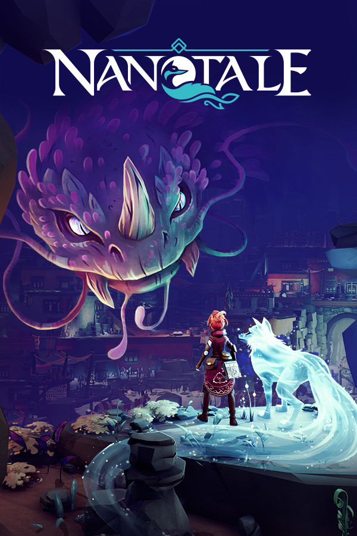

Nanotale: Typing Chronicles
Nanotale: Typing Chronicles
Details
|  | |
| Playtime | Not Played |
| Last Activity | Never |
| Added | 6/3/2022 4:16:49 |
| Modified | 4/2/2023 21:53:51 |
| Completion Status | Not Played |
| Library | Amazon Games |
| Source | Amazon |
| Platform | Amazon Games |
| Release Date | 3/31/2021 |
| Community Score | 76 |
| Critic Score | 68 |
| User Score | |
| Genre | Adventure RPG |
| Developer | Fishing Cactus |
| Publisher | 2PGames Fishing Cactus PID Games |
| Feature | Achievements Cloud Saves Single Player Trading Cards |
| Links | Community Hub Discussions Guides News Store Page PCGamingWiki Achievements |
| Tag | [GGDeals] Synced |
Description
Nanotale - Typing Chronicles is an atmospheric typing adventure RPG set in a colorful vibrant world. Follow Rosalind, a novice Archivist, as she journeys out to explore a distant world. On her quest to gather knowledge, she collects samples of mystic natural beauties. Everything is peaceful. War is a thing of the distant past.
In the shadows, a tale of dissonant magic is spreading, instilling corruption into broken hearts.


Enjoy the game in 11 different languages and create your own Nanotale experience. You can choose to have the tutorial and story in one language and select another one for gameplay and typable elements.

https://store.steampowered.com/app/944920/Nanotale__Typing_Chronicles/
In the shadows, a tale of dissonant magic is spreading, instilling corruption into broken hearts.
Play with magic
Combine powerful spells, change their shapes, and enhance them to defeat enemies. Use your magic on the environment and make it resonate with your creativity.Knowledge is power
As a member of the order, your role as an archivist is to gather knowledge. The more you learn about the world, the stronger you become.Explore a rich world
Embark on a journey to the Ancestral Forest, discover the Blue Desert and try not to get lost in the Sunken Caves. Meet the inhabitants of these new lands, be amazed by the beauty of the flora blooming in these diverse biomes, be intrigued by the critters roaming on your path but be careful not to cross paths with the dangerous creatures looming over.Reveal secrets
Step in a fascinating story with multiple faces that have left their mark on these lands. Meet people, listen to their tales, and catalog mysterious occurrences, in an attempt to unravel the secrets behind dissonant magic.Your mightiest weapon, your keyboard
In Nanotale, everything is played with your keyboard. From puzzles to dialogues, combats to menus the entire game can be played solely with your favorite keyboard. All keys are re-bindable, supporting all kinds of layouts (Qwerty, Azerty, Qwertz, Dvorak, Colemak, BÉPO,...).Enjoy the game in 11 different languages and create your own Nanotale experience. You can choose to have the tutorial and story in one language and select another one for gameplay and typable elements.
https://store.steampowered.com/app/944920/Nanotale__Typing_Chronicles/